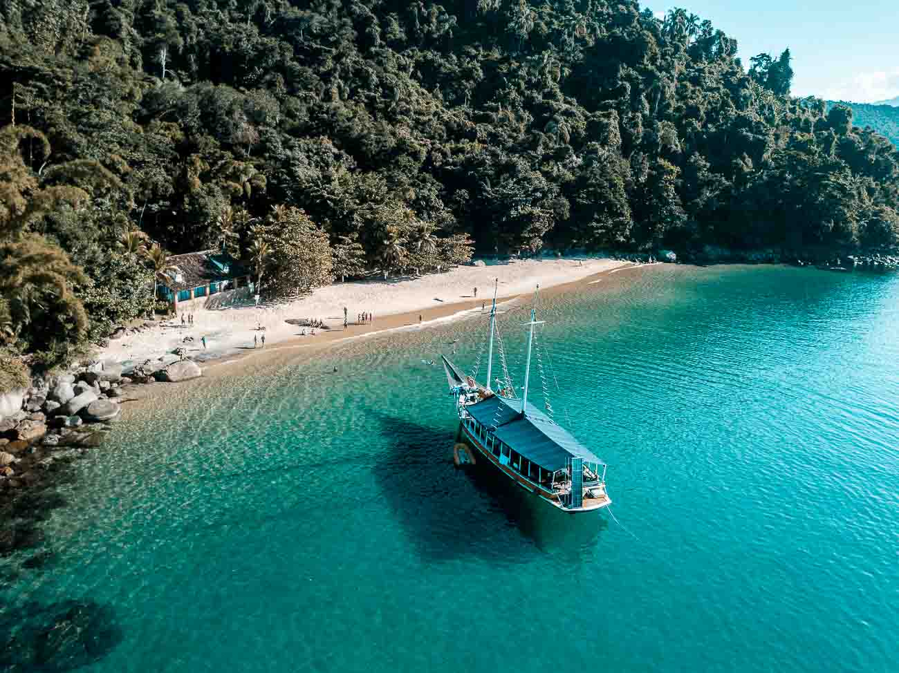

🍹 FESTA A BORDO: Sunset Boat Party em Paraty! ⛵🚌
Prepare-se para viver uma experiência incrível no litoral fluminense! Um passeio exclusivo que combina a energia boa de um encontro no mar com o cenário paradisíaco do arquipélago de Paraty — com transporte de ônibus e open bar inclusos!
Tire o traje de banho do armário, chame os amigos e venha curtir o dia e o pôr do sol nas águas cristalinas a bordo da nossa escuna!

🔥 O que te espera nessa experiência:
- 🚌 Transporte de Ônibus (Ida e Volta): Viagem de ida e volta garantida em ônibus fretado saindo do ponto de encontro direto para o Cais de Paraty.
- 🍹 Open Bar Liberado na Escuna: Bebidas à vontade durante toda a navegação (cerveja trincando, caipirinhas, drinks tropicais, refrigerantes e água).
- 🍔 Serviço de Gastronomia (Opcional/À parte): Porções e petiscos preparados na hora a bordo para quem quiser recarregar as energias.
- 🎶 Ambiente Musical & Playlist Especial: Seleção de músicas com a cara do verão e brasilidades para dar o tom perfeito do passeio.
- 🏝️ Ilhas & Praias Paradisíacas: Roteiro completo de navegação passando pela Ilha dos Cocos e outros pontos cinematográficos com paradas para mergulho.

🕒 Roteiro Oficial do Evento
Embarque no Ônibus & Viagem
Local de Partida: [ung]
Atividade: Encontro do pessoal, embarque no ônibus e início da viagem rumo ao litoral.
Chegada em Paraty & Embarque na Escuna
Local: Cais do Centro Histórico de Paraty.
Atividade: Desembarque do ônibus, recepção da tripulação, início do Open Bar e embarque na escuna para iniciar a navegação.
Parada Principal: Ilha dos Cocos
Atividade: Navegação até a famosa Ilha dos Cocos (conhecida como o "Caribe Fluminense" por suas águas azul-turquesa). Parada estendida para mergulho, fotos e muita descontração.
Circuito Ilhas & Praias Paradisíacas
Atividade: Navegação entre as ilhas mais bonitas da baía (Praia da Lula & Ilha Comprida), com uma segunda parada estratégica para banho de mar e descanso.
Pausa Gourmet & Pôr do Sol no Mar
Atividade: Momento livre para quem desejar degustar o cardápio opcional de petiscos da escuna. Pôr do sol no mar com bebidas geladas e brinde coletivo.
Desembarque da Escuna & Retorno
Atividade: Chegada ao Cais de Paraty e reembarque no ônibus para a viagem de volta.
.jpg)
📋 Informações Gerais & Ingressos
- O que está incluso: Transporte de ônibus (ida e volta), passeio de escuna, som a bordo, paradas para mergulho e Open Bar liberado a bordo.
- Opcional: Cardápio de comidas/porções à venda na escuna (pagamento individual).
- Data: [30/12]
- Horário de Saída do Ônibus: [21:30]
- Ponto de Encontro: [ung]
⚠️ Aviso de Lotação: As vagas são estritamente limitadas pela capacidade dos assentos do ônibus e da lotação máxima da escuna.
Garanta sua vaga agora mesmo! Entre em contato com a organização pelo WhatsApp ou procure a comissão de vendas.